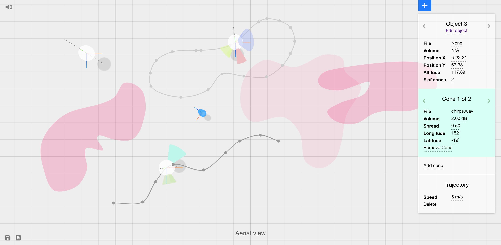
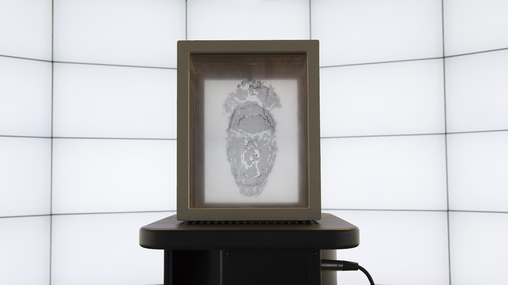

2018

Vylderness is an upcoming virtual
reality performance.
2017

Synthcity is a generative audiovisual
installation. By computationally blending everyday figures and
textures, it synthesizes extremely unrealistic versions of a city
using its real landscapes, objects, sounds and people. Synthcity
was premiered at ISEA 2017 in Manzales, Colombia.
2017

Inviso is a browser-based
application for creating virtual sonic environments. It can be accessed
at http://inviso.cc. A UIST paper about Inviso can be found here.
2016
Temas is a stochastic audiovisual performance.
The software underlying Temas integrates the artist into a generative
system as a module of analysis. Temas stochastically traverses the fine line between the organic and
the synthesized, forming contacts with representationality. Each of
the work's five sections utilizes a different layer of audiovisual
worldmaking that situate the audience and the performer at various
points inside the implied universe of the narrative. As the
perspective shifts, abstract forms take on representational duties,
and alter the nature of immersion.
2016
Imagining Through Sound:
An Experimental Analysis of Narrativity in Electronic Music
[Organised Sound 21(3)]
Electronic music engages with the listening habits we take for granted in our everyday lives, and reveals how intricate they can be. Inspired by such intricacies, I have conducted a series of listening experiments with 80 participants over the course of three years to explore the cognition of electronic music. In this text, I first present the method and the results of this experiment, including a categorical analysis of mental associations evoked by different works of electronic music. Next, I offer a discussion of narrativity in electronic music supported by these results and diverse perspectives on narrativity from a number of disciplines. I then construct a definition of gestures as narrative units in electronic music in relation to events in the environment. In doing so, I bring together various theories on electronic music with not only the findings of the current study but also existing research on auditory cognition.
2016

Distractions: a kinetic sculpture
that utilizes inaudible frequencies to visualize invisible electromagnetic
signals that surround us in daily life. It highlights some of our routine
sources of distraction in their raw forms using a single physical artifact
that brings together together data sonification and visualization.
2015
Node Kara is a mixed-reality installation,
which brings together body-based human-computer interaction, live video
processing, and stochastic audio synthesis. By adopting the process of
blurring both as a theme, and a technique, Node Kara obfuscates the
causal link between an interactive artwork and its audience. The
deblurring of the audiovisual scene through the visitor's embodied
presence becomes an attracting force that invites the viewer to unravel
the underlying world of Node Kara.
2013
"Diegesis is utilized as a paradigm to explain
the tension/interaction between near and far while questioning the
extents to which the listener is inside or outside the musical
material." (Çamcı 2013). With an homage to Roads' homage to
Subotnick, and a citation of Beethoven.
2011
A Christmas song for a world that no longer exists,
as crooned by the Anti-Santa strolling a wasteland formerly known as Earth:
A repurposing of Tin Men and The Telephone's celebrated Christmas
album.
2013
I.N.T.O.: Series of still images and
videos. This work was repurposed as a visual language for the
Istanbul band Fakap.
2012
Birdfish is the second piece
of a tetralogy on evolutionary phenomena. In two movements, it
explores organic forms that transcend the surface of the
ocean.
2010
The opening speech to the piece is from a
broadcasting of the 2006 solar eclipse, which was viewed in its
totality at various locations in Turkey. As an out-of-place
experiencing of this bewildering event, not through the eyes of the
man but the machine, the piece depicts "a phenomenon impossible to
photograph".
2007
An unresolved mistery in two movements that mimick
one another. In 2008, Do you remember Rob Nolasco? was used for
the short film A Case of Stairs, in collaboration with Aydintug
and Wikstol.
2008
anilcamci.com 2018 | All rights reserved. | Contact